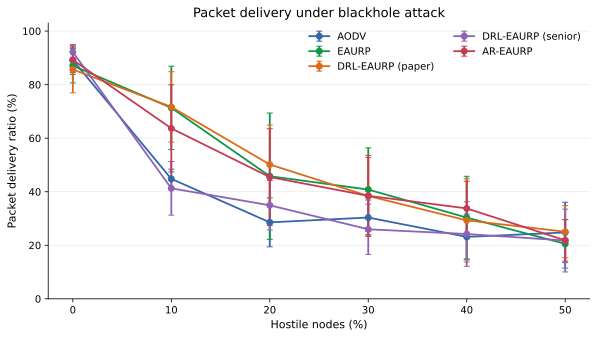
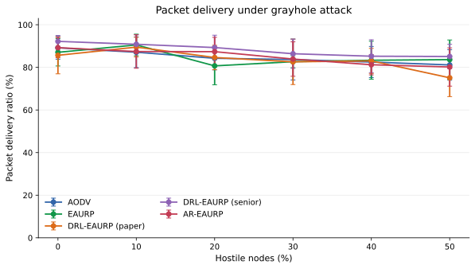
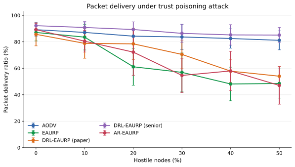
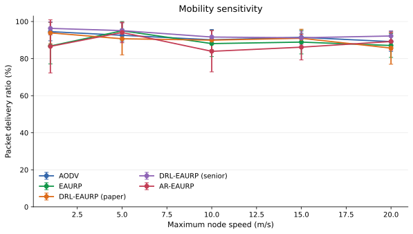
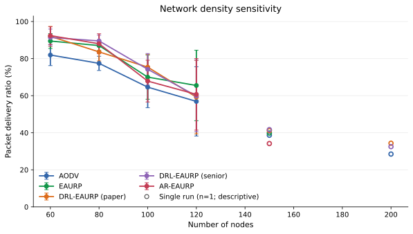
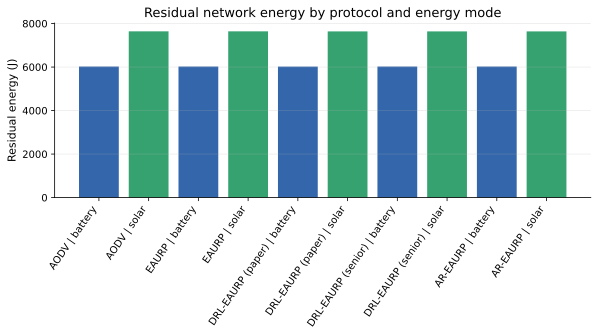
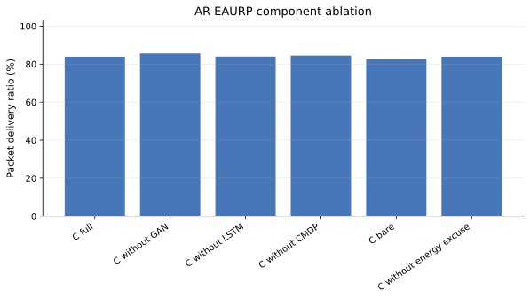

Native ns-3 comparative evaluation
Executive summary
This report summarizes the native ns-3.45 review matrix within the available time. The planned budget is five run numbers per condition with a fixed ns-3 seed of 20260909; the completion table records actual coverage, and incomplete replications are not imputed. The E3 attack sweep includes a paired AR-EAURP versus EAURP PDR analysis from the checksummed per-run checkpoints.
Methods and reproducibility
Reproduction command from the project root: bash ns3/scripts/run.sh --profile=review --only=e1,e2,e3,e4,e5,e6 --out=results/ns3-native-paper-review --render=0. The experiment runner resumes only checksummed runs whose full parameter map and source/build identity match. Run python generate_paper_report.py from the result directory to rebuild the expanded settings ledgers and charts.
Execution provenance: this final E1–E6 report is assembled from verified native ns-3 run checkpoints. The root manifest.json selection field records the original C++ batch selection (e3,e4,e5,e6); E1 and the time-boxed E2 results were included from their verified checkpoint sets. The per-run ledger is the authoritative record of the 863 included runs.
Simulation settings
Each row in configuration_settings.csv names the canonical run-1 CLI arguments and aggregate metrics for one condition, including the actual replicate count and run numbers. Each row in run_settings.csv records the exact CLI argument map for that completed run, simulator-reported cfg_* values, selected per-run metrics, and the SHA-256 of the checksummed raw checkpoint. Confidence intervals are omitted where fewer than two replications exist.
| Experiment | Factors varied | Conditions | Native runs |
|---|---|---|---|
| E1 mobility | 5 protocols × max speed 1, 5, 10, 15, 20 m/s | 25 | 125 |
| E2 density | 5 protocols × 60, 80, 100, 120, 150, 200 nodes | 30 | 150 |
| E3 attacks | 5 protocols × 3 attacks × 0–50% hostile nodes (10-point steps) | 90 | 450 |
| E4 energy | 5 protocols × battery/solar-kinetic harvesting | 10 | 50 |
| E4b lifetime | 5 protocols × battery/solar-kinetic harvesting, 900 s horizon | 10 | 50 |
| E5 ablation | 6 AR-EAURP component configurations | 6 | 30 |
| E5b CMDP floor | 0.70, 0.80, 0.90, 0.95 PDR constraints | 4 | 20 |
| E6 security overhead | 5 protocols plus AR-EAURP without ECC | 6 | 30 |
- Simulator: ns-3.45, native C++ source/build identity SHA-256
45da34216e04a79d26b8e9db9e02270a2bcdb5c3edf8e63fea4d61eda8d9ed02. - Protocols: AODV, EAURP, DRL-EAURP (paper), DRL-EAURP (senior), AR-EAURP.
- Base review scenario: 24 nodes, six CBR flows, 420 m square area, 120 s evaluation, 20 s warm-up, 10 s cooldown.
- AR-EAURP clean commissioning: 240 s; GAN 120 epochs; LSTM 30 epochs. The CMDP route selector also learns during clean commissioning before attack evaluation.
- RNG: fixed seed 20260909 and run numbers 1–5 planned per condition. Run numbers are matched between protocol comparisons; results are stochastic replications, not repeated packets from one run.
- Metrics are reported as mean ± sample SD when at least two replications are present. Per-condition 95% confidence intervals use a two-sided Student t interval with degrees of freedom based on the observed sample size; bounded rate intervals (PDR, TPR, FPR, and AUC) are constrained to [0, 1]. E3 primary paired differences compare AR-EAURP and EAURP using corresponding run numbers.
- All ten pairwise protocol contrasts are retained for each E3 attack/prevalence condition in
pairwise_e3_comparisons.csv; their intervals are unadjusted and should be interpreted as exploratory across this multiple-comparison family. configuration_settings.csvrecords each condition’s canonical run-1 CLI parameter map, observed run numbers, aggregate metrics, and simulator-reported settings.run_settings.csvrecords the exact CLI map for every completed run, measured cfg_* values, seed/run number, and the checksum of its raw checkpoint. Aggregate tables incsv/retain cfg_* means and sample SDs.
The review profile retains the Colab notebook’s E1–E6 factor levels but uses 120 s evaluation and the 24-node/six-flow review workload rather than the notebook full profile’s 400 s and larger default workload. The planned budget is five runs. Any time-boxed shortfall appears in the completion table; this is not a byte-for-byte rerun of the Colab full-profile configuration.
Completion status
Completed 179 of 181 planned conditions and 863 of 905 planned native runs. The time-boxed E2 density sweep has missing replications; they are absent from the ledgers and are not imputed.
| Experiment | Completed conditions | Completed runs |
|---|---|---|
| e1_speed | 25/25 | 125/125 |
| e2_density | 28/30 | 108/150 |
| e3_attack | 90/90 | 450/450 |
| e4_energy | 10/10 | 50/50 |
| e4b_lifetime | 10/10 | 50/50 |
| e5_ablation | 6/6 | 30/30 |
| e5b_cmdp_floor | 4/4 | 20/20 |
| e6_overhead | 6/6 | 30/30 |
E1 — Mobility
| Configuration | PDR | Delay (s) | Throughput (bit/s) |
|---|---|---|---|
| AODV @ 1 m/s | 94.53 ± 4.92 | 0.12 ± 0.10 | 34932.50 ± 1773.64 |
| AODV @ 5 m/s | 92.57 ± 3.41 | 0.12 ± 0.08 | 34212.93 ± 1181.96 |
| AODV @ 10 m/s | 90.13 ± 5.59 | 0.21 ± 0.10 | 33258.11 ± 2130.37 |
| AODV @ 15 m/s | 91.47 ± 2.22 | 0.21 ± 0.05 | 33777.76 ± 747.07 |
| AODV @ 20 m/s | 89.17 ± 5.34 | 0.24 ± 0.14 | 32930.64 ± 1999.54 |
| EAURP @ 1 m/s | 86.80 ± 9.64 | 0.10 ± 0.10 | 32071.52 ± 3523.84 |
| EAURP @ 5 m/s | 95.00 ± 4.99 | 0.18 ± 0.15 | 35081.84 ± 1894.53 |
| EAURP @ 10 m/s | 88.10 ± 7.01 | 0.23 ± 0.12 | 32486.45 ± 2707.45 |
| EAURP @ 15 m/s | 88.90 ± 6.38 | 0.30 ± 0.10 | 32870.02 ± 2304.32 |
| EAURP @ 20 m/s | 87.07 ± 6.41 | 0.29 ± 0.10 | 32138.88 ± 2366.01 |
| DRL-EAURP (paper) @ 1 m/s | 93.87 ± 5.78 | 0.09 ± 0.02 | 34676.83 ± 2041.94 |
| DRL-EAURP (paper) @ 5 m/s | 90.70 ± 8.69 | 0.19 ± 0.19 | 33476.00 ± 3202.31 |
| DRL-EAURP (paper) @ 10 m/s | 89.97 ± 5.21 | 0.24 ± 0.13 | 33172.64 ± 1953.22 |
| DRL-EAURP (paper) @ 15 m/s | 90.97 ± 4.89 | 0.30 ± 0.08 | 33570.30 ± 1859.21 |
| DRL-EAURP (paper) @ 20 m/s | 85.67 ± 8.71 | 0.28 ± 0.13 | 31650.02 ± 3159.78 |
| DRL-EAURP (senior) @ 1 m/s | 96.30 ± 3.57 | 0.12 ± 0.08 | 35571.57 ± 1307.86 |
| DRL-EAURP (senior) @ 5 m/s | 95.10 ± 4.18 | 0.14 ± 0.09 | 35086.50 ± 1611.90 |
| DRL-EAURP (senior) @ 10 m/s | 91.63 ± 3.48 | 0.19 ± 0.07 | 33805.54 ± 1327.14 |
| DRL-EAURP (senior) @ 15 m/s | 91.23 ± 3.54 | 0.22 ± 0.11 | 33687.44 ± 1365.07 |
| DRL-EAURP (senior) @ 20 m/s | 92.20 ± 2.78 | 0.28 ± 0.08 | 34059.62 ± 1042.92 |
| AR-EAURP @ 1 m/s | 86.60 ± 14.32 | 0.12 ± 0.14 | 31991.66 ± 5181.71 |
| AR-EAURP @ 5 m/s | 94.10 ± 5.56 | 0.19 ± 0.12 | 34783.52 ± 2094.29 |
| AR-EAURP @ 10 m/s | 83.93 ± 11.10 | 0.22 ± 0.09 | 30954.80 ± 4053.12 |
| AR-EAURP @ 15 m/s | 86.17 ± 6.90 | 0.31 ± 0.13 | 31847.71 ± 2513.57 |
| AR-EAURP @ 20 m/s | 89.23 ± 4.73 | 0.27 ± 0.06 | 32886.26 ± 1742.36 |
E2 — Network density
Run count is shown for each condition. A single run is descriptive only and is not a replicated estimate; the settings ledgers show exact coverage.
| Configuration | Runs | PDR | Delay (s) | Throughput (bit/s) |
|---|---|---|---|---|
| AODV (reference baseline) @ N=60 | 5 | 81.93 ± 5.71 | 0.25 ± 0.13 | 30248.45 ± 2179.59 |
| EAURP (base substrate) @ N=60 | 5 | 89.47 ± 4.02 | 0.26 ± 0.06 | 32970.30 ± 1558.44 |
| A: DRL-EAURP (paper) @ N=60 | 5 | 92.00 ± 5.39 | 0.28 ± 0.04 | 33989.07 ± 1885.60 |
| B: DRL-EAURP (senior) @ N=60 | 5 | 91.40 ± 4.55 | 0.26 ± 0.05 | 33710.98 ± 1673.22 |
| C: AR-EAURP (advancement) @ N=60 | 5 | 92.40 ± 4.79 | 0.23 ± 0.07 | 34144.48 ± 1668.36 |
| AODV (reference baseline) @ N=80 | 5 | 77.43 ± 3.85 | 0.22 ± 0.07 | 28616.26 ± 1519.62 |
| EAURP (base substrate) @ N=80 | 5 | 87.03 ± 2.72 | 0.23 ± 0.03 | 32123.42 ± 1079.28 |
| A: DRL-EAURP (paper) @ N=80 | 5 | 83.60 ± 4.86 | 0.29 ± 0.06 | 30875.17 ± 1856.13 |
| B: DRL-EAURP (senior) @ N=80 | 5 | 89.53 ± 3.11 | 0.28 ± 0.06 | 33080.03 ± 1123.74 |
| C: AR-EAURP (advancement) @ N=80 | 5 | 88.00 ± 5.39 | 0.25 ± 0.05 | 32492.42 ± 1952.84 |
| AODV (reference baseline) @ N=100 | 5 | 64.60 ± 11.08 | 0.25 ± 0.01 | 23852.34 ± 4045.73 |
| EAURP (base substrate) @ N=100 | 5 | 70.00 ± 11.94 | 0.31 ± 0.07 | 25908.19 ± 4365.27 |
| A: DRL-EAURP (paper) @ N=100 | 5 | 75.40 ± 6.80 | 0.40 ± 0.11 | 27885.86 ± 2431.58 |
| B: DRL-EAURP (senior) @ N=100 | 5 | 74.23 ± 8.51 | 0.29 ± 0.04 | 27448.06 ± 3083.48 |
| C: AR-EAURP (advancement) @ N=100 | 5 | 67.87 ± 11.27 | 0.26 ± 0.07 | 25089.18 ± 4112.41 |
| AODV (reference baseline) @ N=120 | 5 | 56.90 ± 18.69 | 0.36 ± 0.16 | 21015.57 ± 6915.42 |
| EAURP (base substrate) @ N=120 | 5 | 65.50 ± 19.00 | 0.29 ± 0.10 | 24207.65 ± 6917.94 |
| A: DRL-EAURP (paper) @ N=120 | 5 | 59.20 ± 19.86 | 0.28 ± 0.14 | 21868.96 ± 7269.89 |
| B: DRL-EAURP (senior) @ N=120 | 5 | 59.83 ± 19.34 | 0.33 ± 0.17 | 22168.42 ± 7095.11 |
| C: AR-EAURP (advancement) @ N=120 | 5 | 60.70 ± 19.30 | 0.39 ± 0.20 | 22446.27 ± 7069.64 |
| AODV (reference baseline) @ N=150 | 1 | 38.67 (n=1) | 0.32 (n=1) | 14312.80 (n=1) |
| EAURP (base substrate) @ N=150 | 1 | 39.83 (n=1) | 0.35 (n=1) | 14856.24 (n=1) |
| A: DRL-EAURP (paper) @ N=150 | 1 | 41.17 (n=1) | 0.32 (n=1) | 15351.44 (n=1) |
| B: DRL-EAURP (senior) @ N=150 | 1 | 41.67 (n=1) | 0.38 (n=1) | 15483.04 (n=1) |
| C: AR-EAURP (advancement) @ N=150 | 1 | 34.17 (n=1) | 0.22 (n=1) | 12717.20 (n=1) |
| AODV (reference baseline) @ N=200 | 1 | 28.50 (n=1) | 0.12 (n=1) | 10568.80 (n=1) |
| A: DRL-EAURP (paper) @ N=200 | 1 | 34.33 (n=1) | 0.16 (n=1) | 12732.72 (n=1) |
| B: DRL-EAURP (senior) @ N=200 | 1 | 32.50 (n=1) | 0.21 (n=1) | 12058.00 (n=1) |
E3 — Attack prevalence by protocol
PDR cells show mean ± sample SD across five run numbers; the table keeps attack types and hostile-node percentages separate.
Blackhole
| Hostile nodes | AODV | EAURP | DRL-EAURP (paper) | DRL-EAURP (senior) | AR-EAURP |
|---|---|---|---|---|---|
| 0% | 89.17 ± 5.34 | 87.07 ± 6.41 | 85.67 ± 8.71 | 92.20 ± 2.78 | 89.23 ± 4.73 |
| 10% | 44.80 ± 3.62 | 71.33 ± 15.58 | 71.67 ± 13.16 | 41.27 ± 10.03 | 63.67 ± 16.29 |
| 20% | 28.57 ± 9.14 | 45.80 ± 23.59 | 50.17 ± 14.74 | 34.93 ± 9.25 | 45.47 ± 18.08 |
| 30% | 30.37 ± 6.55 | 40.80 ± 15.61 | 38.40 ± 14.38 | 25.97 ± 9.38 | 38.47 ± 15.13 |
| 40% | 23.13 ± 8.54 | 30.33 ± 15.43 | 29.30 ± 15.53 | 24.20 ± 12.06 | 33.77 ± 10.16 |
| 50% | 24.80 ± 11.27 | 20.53 ± 9.06 | 25.07 ± 9.73 | 21.77 ± 11.73 | 21.83 ± 7.74 |
Grayhole
| Hostile nodes | AODV | EAURP | DRL-EAURP (paper) | DRL-EAURP (senior) | AR-EAURP |
|---|---|---|---|---|---|
| 0% | 89.17 ± 5.34 | 87.07 ± 6.41 | 85.67 ± 8.71 | 92.20 ± 2.78 | 89.23 ± 4.73 |
| 10% | 87.10 ± 7.19 | 90.53 ± 5.05 | 89.50 ± 4.62 | 90.83 ± 4.44 | 87.43 ± 7.86 |
| 20% | 84.27 ± 5.43 | 80.70 ± 8.88 | 84.63 ± 5.76 | 89.30 ± 5.79 | 87.37 ± 6.72 |
| 30% | 83.67 ± 9.62 | 82.67 ± 2.84 | 82.60 ± 10.65 | 86.40 ± 6.85 | 83.90 ± 8.08 |
| 40% | 82.50 ± 7.31 | 83.33 ± 8.92 | 83.03 ± 5.88 | 85.23 ± 7.72 | 81.23 ± 4.75 |
| 50% | 81.13 ± 7.15 | 83.63 ± 9.21 | 75.10 ± 8.81 | 85.10 ± 5.73 | 80.17 ± 8.99 |
Trust Poisoning
| Hostile nodes | AODV | EAURP | DRL-EAURP (paper) | DRL-EAURP (senior) | AR-EAURP |
|---|---|---|---|---|---|
| 0% | 89.17 ± 5.34 | 87.07 ± 6.41 | 85.67 ± 8.71 | 92.20 ± 2.78 | 89.23 ± 4.73 |
| 10% | 87.10 ± 7.19 | 83.53 ± 9.72 | 78.83 ± 11.29 | 90.83 ± 4.44 | 80.47 ± 8.18 |
| 20% | 84.27 ± 5.43 | 61.13 ± 14.01 | 78.47 ± 11.74 | 89.30 ± 5.79 | 72.20 ± 17.50 |
| 30% | 83.67 ± 9.62 | 56.90 ± 14.72 | 70.47 ± 10.84 | 86.40 ± 6.85 | 54.60 ± 12.97 |
| 40% | 82.50 ± 7.31 | 48.13 ± 12.71 | 57.83 ± 8.58 | 85.23 ± 7.72 | 58.00 ± 14.81 |
| 50% | 81.13 ± 7.15 | 48.50 ± 11.02 | 54.00 ± 7.28 | 85.10 ± 5.73 | 47.03 ± 14.20 |
E3 detection and paired delivery analysis
EAURP and the two DRL-EAURP baselines do not use the AR GAN detector; their detector-specific fields are not comparable. AR detector values below are the project’s per-window metrics.
| Attack | Hostile nodes | AR window TPR | AR window FPR | AR score AUC | AR−EAURP PDR (pp) | Paired 95% CI (pp) | AR wins |
|---|---|---|---|---|---|---|---|
| blackhole | 0% | 0.00 ± 0.00 | 5.51 ± 2.94 | 0.50 ± 0.00 | 2.17 | [-4.68, 9.02] | 4/5 |
| blackhole | 10% | 96.00 ± 8.94 | 6.63 ± 3.82 | 0.98 ± 0.02 | -7.67 | [-21.75, 6.41] | 2/5 |
| blackhole | 20% | 100.00 ± 0.00 | 7.26 ± 6.98 | 0.97 ± 0.03 | -0.33 | [-9.36, 8.69] | 2/5 |
| blackhole | 30% | 93.42 ± 8.17 | 10.97 ± 5.12 | 0.97 ± 0.04 | -2.33 | [-11.33, 6.66] | 2/5 |
| blackhole | 40% | 100.00 ± 0.00 | 13.69 ± 13.12 | 0.97 ± 0.06 | 3.43 | [-9.16, 16.03] | 2/5 |
| blackhole | 50% | 99.05 ± 2.13 | 12.29 ± 12.89 | 0.98 ± 0.05 | 1.30 | [-6.35, 8.95] | 2/5 |
| grayhole | 0% | 0.00 ± 0.00 | 5.51 ± 2.94 | 0.50 ± 0.00 | 2.17 | [-4.68, 9.02] | 4/5 |
| grayhole | 10% | 6.19 ± 8.52 | 5.89 ± 3.45 | 0.55 ± 0.15 | -3.10 | [-8.64, 2.44] | 1/5 |
| grayhole | 20% | 2.36 ± 3.24 | 3.26 ± 2.49 | 0.62 ± 0.11 | 6.67 | [-3.90, 17.24] | 4/5 |
| grayhole | 30% | 7.82 ± 4.98 | 5.24 ± 5.14 | 0.55 ± 0.07 | 1.23 | [-9.06, 11.53] | 2/5 |
| grayhole | 40% | 9.83 ± 5.31 | 4.04 ± 4.53 | 0.59 ± 0.12 | -2.10 | [-12.75, 8.55] | 2/5 |
| grayhole | 50% | 9.29 ± 5.79 | 3.94 ± 3.54 | 0.56 ± 0.11 | -3.47 | [-10.35, 3.42] | 1/5 |
| trust poisoning | 0% | 0.00 ± 0.00 | 5.51 ± 2.94 | 0.50 ± 0.00 | 2.17 | [-4.68, 9.02] | 4/5 |
| trust poisoning | 10% | 3.33 ± 7.45 | 7.40 ± 1.32 | 0.46 ± 0.17 | -3.07 | [-16.22, 10.09] | 3/5 |
| trust poisoning | 20% | 8.30 ± 6.04 | 7.64 ± 5.16 | 0.51 ± 0.03 | 11.07 | [1.35, 20.79] | 5/5 |
| trust poisoning | 30% | 12.31 ± 8.77 | 5.00 ± 4.06 | 0.51 ± 0.13 | -2.30 | [-14.62, 10.02] | 2/5 |
| trust poisoning | 40% | 10.94 ± 3.96 | 7.70 ± 2.95 | 0.49 ± 0.04 | 9.87 | [-1.37, 21.10] | 4/5 |
| trust poisoning | 50% | 10.17 ± 3.20 | 7.21 ± 5.36 | 0.39 ± 0.05 | -1.47 | [-21.89, 18.95] | 2/5 |
The paired interval is for AR-EAURP minus EAURP PDR within that attack/prevalence condition. A positive point estimate is not, by itself, evidence of superiority; inspect the interval and the five paired outcomes in the raw checkpoints.
E4 — Energy mode
| Configuration | PDR | Residual energy (J) | Dead nodes | |---|---|---|---| | AODV | battery | 89.17 ± 5.34 | 6022.93 ± 2.25 | 0.00 ± 0.00 | | AODV | solar | 89.17 ± 5.34 | 7640.87 ± 207.91 | 0.00 ± 0.00 | | EAURP | battery | 88.83 ± 2.98 | 6021.79 ± 1.85 | 0.00 ± 0.00 | | EAURP | solar | 87.07 ± 6.41 | 7640.65 ± 207.70 | 0.00 ± 0.00 | | DRL-EAURP (paper) | battery | 82.93 ± 13.70 | 6021.05 ± 4.12 | 0.00 ± 0.00 | | DRL-EAURP (paper) | solar | 85.67 ± 8.71 | 7638.78 ± 208.57 | 0.00 ± 0.00 | | DRL-EAURP (senior) | battery | 89.10 ± 4.57 | 6021.75 ± 2.39 | 0.00 ± 0.00 | | DRL-EAURP (senior) | solar | 92.20 ± 2.78 | 7639.39 ± 207.71 | 0.00 ± 0.00 | | AR-EAURP | battery | 87.47 ± 4.41 | 6022.38 ± 2.18 | 0.00 ± 0.00 | | AR-EAURP | solar | 89.23 ± 4.73 | 7639.45 ± 207.81 | 0.00 ± 0.00 |
E4b — Network lifetime
| Configuration | First death (s) | 80% dead (s) | Residual energy (J) | |---|---|---|---| | AODV | battery | 422.65 ± 0.56 | 424.55 ± 0.15 | 0.00 ± 0.00 | | AODV | solar | 432.10 ± 2.28 | censored / mixed | 1395.71 ± 166.72 | | EAURP | battery | 423.30 ± 0.58 | 424.90 ± 0.20 | 0.00 ± 0.00 | | EAURP | solar | 432.84 ± 1.55 | censored / mixed | 1370.50 ± 190.10 | | DRL-EAURP (paper) | battery | 423.50 ± 0.38 | 424.98 ± 0.33 | 0.00 ± 0.00 | | DRL-EAURP (paper) | solar | 432.20 ± 2.51 | censored / mixed | 1402.79 ± 212.21 | | DRL-EAURP (senior) | battery | 422.89 ± 0.58 | 424.76 ± 0.11 | 0.00 ± 0.00 | | DRL-EAURP (senior) | solar | 432.12 ± 2.34 | censored / mixed | 1394.65 ± 167.13 | | AR-EAURP | battery | 423.60 ± 0.69 | 425.12 ± 0.34 | 0.00 ± 0.00 | | AR-EAURP | solar | 432.79 ± 1.90 | censored / mixed | 1360.29 ± 212.01 |
E5 — AR-EAURP component ablations
| Configuration | PDR | Window TPR | Window FPR | Score AUC |
|---|---|---|---|---|
| C full | 83.90 ± 8.08 | 7.82 ± 4.98 | 5.24 ± 5.14 | 0.55 ± 0.07 |
| C without GAN | 85.63 ± 8.04 | 0.00 ± 0.00 | 0.00 ± 0.00 | 0.50 ± 0.00 |
| C without LSTM | 83.97 ± 7.25 | 8.89 ± 8.43 | 5.92 ± 3.67 | 0.56 ± 0.03 |
| C without CMDP | 84.50 ± 7.35 | 6.77 ± 8.57 | 5.55 ± 5.21 | 0.60 ± 0.09 |
| C bare | 82.67 ± 2.84 | 0.00 ± 0.00 | 0.00 ± 0.00 | 0.50 ± 0.00 |
| C without energy excuse | 83.90 ± 8.08 | 7.82 ± 4.98 | 5.24 ± 5.14 | 0.55 ± 0.07 |
E5b — CMDP PDR floor
| Configuration | PDR | Final CMDP λ | Peak CMDP λ |
|---|---|---|---|
| C floor=0.70 | 70.77 ± 20.20 | 0.43 ± 0.54 | 0.50 ± 0.50 |
| C floor=0.80 | 88.63 ± 4.07 | 0.70 ± 0.65 | 0.86 ± 0.54 |
| C floor=0.90 | 83.90 ± 8.08 | 1.69 ± 0.76 | 1.71 ± 0.72 |
| C floor=0.95 | 78.20 ± 12.22 | 2.33 ± 0.99 | 2.33 ± 0.99 |
E6 — Security overhead
| Configuration | PDR | Crypto overhead (B) | Control bytes | Delay (s) |
|---|---|---|---|---|
| AODV | 83.67 ± 9.62 | 30856.00 ± 1620.25 | 180906.20 ± 13723.64 | 0.21 ± 0.14 |
| EAURP | 82.67 ± 2.84 | 30654.40 ± 494.74 | 224338.60 ± 10550.78 | 0.27 ± 0.08 |
| DRL-EAURP (paper) | 82.60 ± 10.65 | 30699.20 ± 1761.51 | 223893.80 ± 31384.10 | 0.23 ± 0.10 |
| DRL-EAURP (senior) | 86.40 ± 6.85 | 31326.40 ± 1143.28 | 206686.40 ± 14286.77 | 0.21 ± 0.06 |
| AR-EAURP | 83.90 ± 8.08 | 30906.40 ± 1355.82 | 218395.00 ± 14430.38 | 0.28 ± 0.14 |
| C without ECC | 84.03 ± 4.51 | 0.00 ± 0.00 | 230747.60 ± 24773.70 | 0.24 ± 0.16 |
Interpretation and limits
- E3 is the direct attack-prevalence comparison. Read the protocol rows at each attack and prevalence rather than collapsing all hostile fractions into one score.
- PDR is application packets received divided by packets sent in the measured window, with arrivals through cooldown. Delay and throughput are also application-level metrics.
- The planned design uses five run numbers per condition. The completion-status table reports the actual number used for each experiment; single-run conditions have no empirical SD or confidence interval and support descriptive observations only. Multiple comparisons across many cells are exploratory and no family-wise error correction is applied.
- Pairing matches the configured ns-3 seed and run number across protocols. It does not force event-by-event identical random draws; protocol-specific event paths can consume random streams differently.
- AR’s TPR/FPR/AUC are detector measurements. Baseline protocols do not implement that detector, so a zero/default baseline detector value must not be interpreted as perfect classification or compared as a detector score.
- The lifetime experiment includes censored runs. Censored observations must not be treated as observed death times; the raw observed/censored flags are preserved in the CSV.
- These simulations support claims only for the stated ns-3 models and factor ranges. They do not establish real-world wireless performance without calibration and independent replication.
Visual comparisons
Error bars show sample standard deviation. In the density figure, open circles mark single-run conditions (n=1), which are descriptive only.







Files and provenance
- Completed 179 of 181 planned conditions and 863 of 905 planned ns-3 runs; per-experiment coverage is tabulated above.
study_settings.json: complete configuration and factor-level manifest.configuration_settings.csv: full settings plus aggregate result for every condition.run_settings.csv: settings and raw checkpoint provenance for each completed individual run.pairwise_e3_comparisons.csv: all ten matched protocol-pair PDR contrasts across the 18 attack/prevalence conditions, with 95% intervals and per-run differences.csv/: aggregate condition-level results, including simulator-reported cfg_* settings and sample SDs.raw/: checksummed per-run metric checkpoints used for the paired E3 PDR analysis.report.md,report.html, andfigures/: native experiment-runner tables, plot scripts, and rendered SVG/PNG figures.paper_results.md: this expanded paper-style summary.